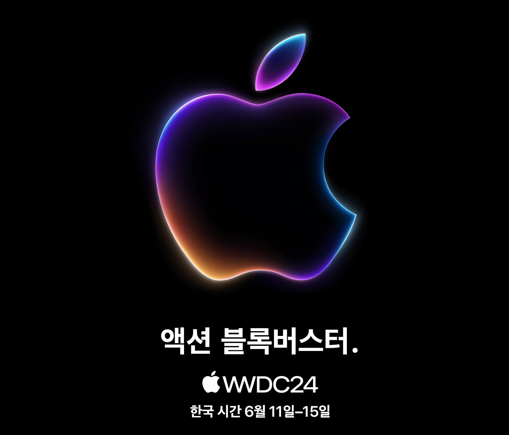

WWDC24 드디어 다음주
Apple
//
2024년 06월 04일 16:10 작성
//
2024년 06월 04일 16:10 업데이트

애플이 어제는 영어 이메일을 보내더니 오늘은 한글로 친절하게 다시 보내준 것 같다. 내용은 조금 다른 것 같기도 한데 아무렴 어떨까. 어쨌거나 제목대로 WWDC24가 드디어 한국 시각으로 다음주에 애플 파크에서 열린다.
이번 WWDC 로고 이미지에는 별로 특색이 안 보인다. 뭔가 늘상 힌트 같은 게 숨겨져 있었는데 이렇게 수수(?)하다니 "하드웨어 신제품 발표는 없을 거"라는 루머가 사실일 가능성이 높아 보인다.